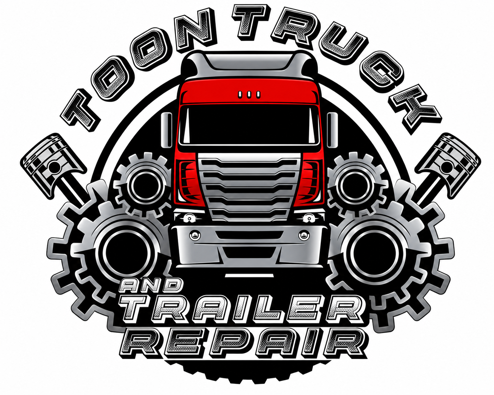

Legal & Litigation Administrative Support
Client intake, case coordination, legal calendaring, document organization, and e-filing assistance.
Explore service →Strategic administrative support, corporate services, and operational solutions for businesses and professionals nationwide.
Top Choice Companies, Inc. provides professional administrative, corporate, and operational support designed to simplify complexity and keep business moving forward.
Our service offerings connect essential documentation, coordination, and administrative processes under one professional point of contact.
Learn More About UsExplore four interconnected areas of administrative and operational support.
Client intake, case coordination, legal calendaring, document organization, and e-filing assistance.
Explore service →
Apostille coordination, corporate correspondence, document workflows, and virtual mailroom support.
Explore service →
DOT documentation, driver qualification tracking, employee credentialing, and HR onboarding coordination.
Explore service →
Remote testing coordination, records administration, scheduling, and process support.
Explore service →Solutions designed around the administrative needs of different organizations and individuals.
 Law Firms & Attorneys
Law Firms & AttorneysAdministrative support for intake, calendars, and case documentation.
 Small & Midsize Businesses
Small & Midsize BusinessesFlexible support for documentation and back-office workflows.
 Trucking & Transportation
Trucking & TransportationDriver qualification tracking and operational records administration.
 Corporations & Enterprises
Corporations & EnterprisesCoordinated document and administrative workflows.
 Entrepreneurs & Startups
Entrepreneurs & StartupsBusiness administration support as operations evolve.
 Individuals
IndividualsDocument coordination and administrative assistance.

Delaware-based truck and trailer repair services for fleets and owner-operators.
Visit Toon Truck & Trailer Repair ↗Tell us what your organization needs. We'll follow up to discuss next steps and a custom quote.